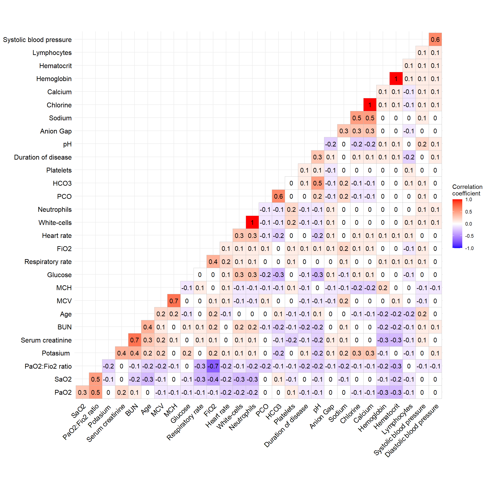
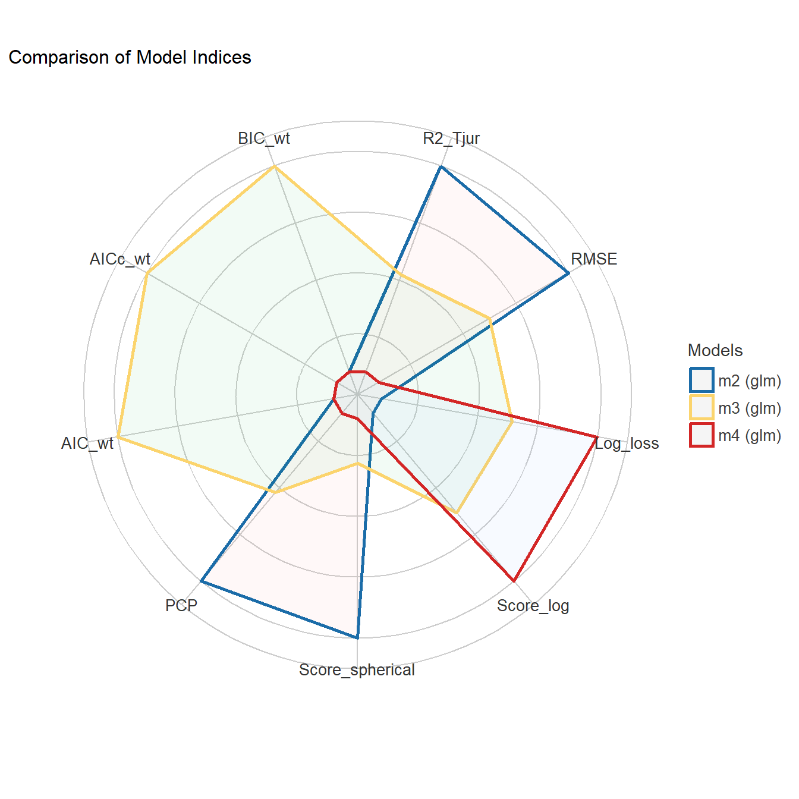
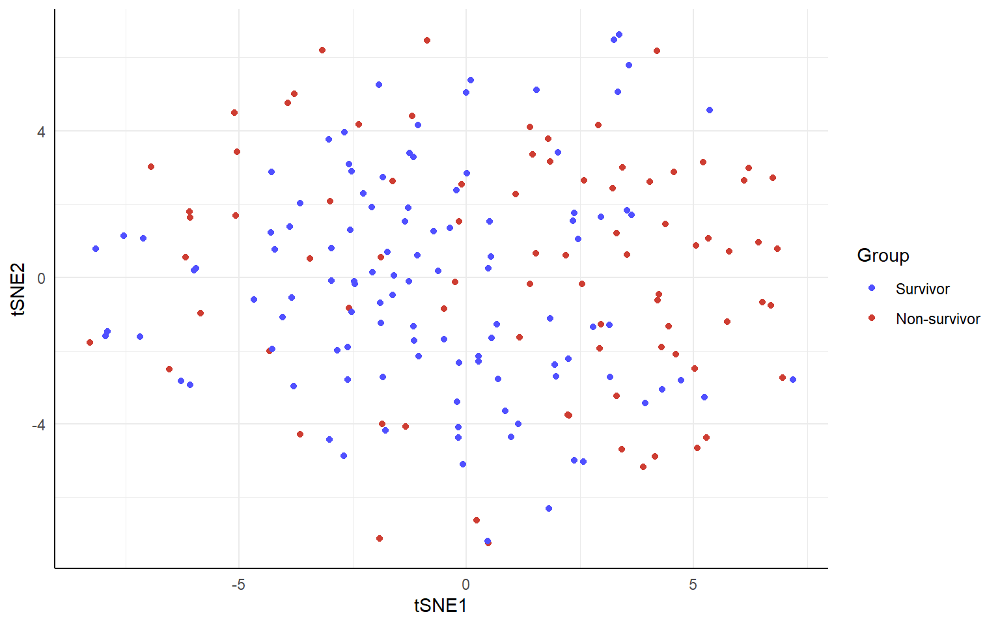

Code
knitr::opts_chunk$set(message = FALSE, warning= FALSE)knitr::opts_chunk$set(message = FALSE, warning= FALSE)# Packages
pacman::p_load(rio,
here,
rfextras,
reportfactory,
tidyverse,
ggcorrplot,
ggsci,
ggpubr,
ggfortify,
ggbiplot,
finalfit,
gtsummary,
flextable,
broom,
performance,
lmtest,
stats,
Rtsne,
FactoMineR,
factoextra,
corrplot,
grateful)
# My function scripts
rfextras::load_scripts()grateful::cite_packages(out.dir = ".", citation.style = "vancouver")
|
| | 0%
|
|......................................................................| 100%
"C:/Program Files/RStudio/resources/app/bin/quarto/bin/tools/pandoc" +RTS -K512m -RTS grateful-report.knit.md --to html4 --from markdown+autolink_bare_uris+tex_math_single_backslash --output pandoc13103bcf53f9.html --lua-filter "C:\Users\user\AppData\Local\R\win-library\4.3\rmarkdown\rmarkdown\lua\pagebreak.lua" --lua-filter "C:\Users\user\AppData\Local\R\win-library\4.3\rmarkdown\rmarkdown\lua\latex-div.lua" --embed-resources --standalone --variable bs3=TRUE --section-divs --template "C:\Users\user\AppData\Local\R\win-library\4.3\rmarkdown\rmd\h\default.html" --no-highlight --variable highlightjs=1 --variable theme=bootstrap --mathjax --variable "mathjax-url=https://mathjax.rstudio.com/latest/MathJax.js?config=TeX-AMS-MML_HTMLorMML" --include-in-header "C:\Users\user\AppData\Local\Temp\RtmpgJQPH3\rmarkdown-str131036f04407.html" --citeproc [1] "./grateful-report.html"clean_data <- import(here("data", "clean_data.tsv"))# Make my gtsummary theme
my_theme <-
list(
"pkgwide-fn:pvalue_fun" = function(x) style_pvalue(x, digits = 2),
"pkgwide-fn:prependpvalue_fun" = function(x) style_pvalue(x, digits = 2, prepend_p = TRUE),
"tbl_summary-str:continuous_stat" = "{median} ({p25}, {p75})",
"tbl_summary-str:categorical_stat" = "{n} ({p}%)",
"tbl_summary-fn:percent_fun" = function(x) style_number(x, digits = 1, scale = 100),
"tbl_summary-arg:missing" = "no"
)
# Combine themes
set_gtsummary_theme(my_theme, theme_gtsummary_compact())
theme_gtsummary_language(language = "en")Possible risk factors associated with mortality from COVID-19 in patients with type II diabetes mellitus, each factor is labeled with a legend that indicates its clinical importance, accuracy, and number of events.
\####\###\##\#data <- clean_data |>
mutate(edad = ff_label(edad, "Age (years)"), ###
edad.c = case_when(edad <= 60 ~ "< 61",
edad > 60 ~ ">= 61") |>
fct_relevel("< 61", ">= 61") |>
ff_label("Age (years)"),
sexo = factor(sexo) |> ###
fct_relevel("Female", "Male") |>
ff_label("Sex"),
t_de_enfermedad = ff_label(t_de_enfermedad,
"Duration of disease (days)"), ##
tabaquismo = factor(tabaquismo) |> ####
fct_relevel("No", "Yes") |>
ff_label("Smoking"),
alcoholismo = factor(alcoholismo) |> ####
fct_relevel("No", "Yes") |>
ff_label("Alcoholism"),
obesidad = factor(obesidad) |> ###
fct_relevel("No", "Yes") |>
ff_label("Obesity"),
asma_bronquial = factor(asma_bronquial) |> ####
fct_relevel("No", "Yes") |>
ff_label("Asthma"),
hta = factor(hta) |> ###
fct_relevel("No", "Yes") |>
ff_label("Hypertension"),
dislipidemia = factor(dislipidemia) |> ##
fct_relevel("No", "Yes") |>
ff_label("Dyslipidemia"),
ecv = factor(ecv) |> ####
fct_relevel("No", "Yes") |>
ff_label("Cerebrovascular disease"),
neoplasia = factor(neoplasia) |> ####
fct_relevel("No", "Yes") |>
ff_label("Cancer"),
vih = factor(vih) |> ####
fct_relevel("No", "Yes") |>
ff_label("HIV"),
e_inmunosupresora =
case_when(neoplasia == "Yes" | vih == "Yes" | e_inmunosupresora == "Yes" ~ "Yes",
TRUE ~ "No") |> ####
fct_relevel("No", "Yes") |>
ff_label("Immunesupressive disease"),
erc = factor(erc) |> ####
fct_recode("No" = "ON",) |>
fct_relevel("No", "Yes") |>
ff_label("Chronic renal disease"),
f_renal_aguda = factor(f_renal_aguda) |> #
fct_relevel("No", "Yes") |>
ff_label("Acute kidney injury"),
fiebre = factor(fiebre) |> ###
fct_relevel("No", "Yes") |>
ff_label("Fever"),
tos = factor(tos) |> ###
fct_relevel("No", "Yes") |>
ff_label("Dry cought"),
dolor_de_garganta = factor(dolor_de_garganta)|> #
fct_relevel("No", "Yes") |>
ff_label("Sore throat"),
malestar_general = factor(malestar_general) |> #
fct_relevel("No", "Yes") |>
ff_label("General malaise"),
cefalea = factor(cefalea) |> #
fct_relevel("No", "Yes") |>
ff_label("Headache"),
astenia = factor(astenia) |> ###
fct_relevel("No", "Yes") |>
ff_label("Asthenia"),
anosmia = factor(anosmia) |> ###
fct_relevel("No", "Yes") |>
ff_label("Anosmia"),
disgeusia = factor(disgeusia) |> ###
fct_relevel("No", "Yes") |>
ff_label("Dysgeusia"),
disnea = factor(disnea) |> ###
fct_relevel("No", "Yes") |>
ff_label("Dyspnea"),
perdida_de_peso = factor(perdida_de_peso) |> ####
fct_relevel("No", "Yes") |>
ff_label("Weight loss"),
estertores_pulmonares = factor(estertores_pulmonares) |> ###
fct_relevel("No", "Yes") |>
ff_label("Lung crackles"),
diarrrea = factor(diarrrea) |> ###
fct_relevel("No", "Yes") |>
ff_label("Diarrhea"),
emesis = factor(emesis) |> ###
fct_relevel("No", "Yes") |>
ff_label("Vomiting"),
dolor_abdominal = factor(dolor_abdominal) |> ####
fct_relevel("No", "Yes") |>
ff_label("Abdominal pain"),
poliuria = factor(poliuria) |> ####
fct_relevel("Yes", "No") |>
ff_label("Polyuria"),
polidipsia = factor(polidipsia) |> ####
fct_relevel("Yes", "No") |>
ff_label("Polidipsia"),
polifagia = factor(polifagia) |> ####
fct_relevel("Yes", "No") |>
ff_label("Poliphagia"),
disgeusia = factor(disgeusia) |> ####
fct_relevel("Yes", "No") |>
ff_label("Dysgeusia"),
taquipnea = factor(taquipnea) |> ###
fct_relevel("No", "Yes") |>
ff_label("Tachypnea"),
sensorio = factor(sensorio) |> #
fct_recode("Awake" = "DESPIERTO",
"Sleepy" = "SOMNOLIENTO",
"Drowsy" = "SOPOROSO") |>
fct_relevel("Awake",
"Sleepy",
"Drowsy") |>
ff_label("Sensory"),
ingreso_a_uci = factor(ingreso_a_uci) |> ####
fct_relevel("No", "Yes") |>
ff_label("ICU admission"),
corticoides = case_when(corticoides == "No" ~ "No",
TRUE ~ "Yes") |> ###
fct_relevel("No", "Yes") |>
ff_label("Corticosteroids"),
anticoagulantes = factor(anticoagulantes) |> ###
fct_recode("Enoxaparin" = "ENOXAPARINA") |>
fct_relevel("No", "Enoxaparin") |>
ff_label("Anticoagulants"),
antiparasitarios = factor(antiparasitarios) |> ###
fct_recode("Ivermectin" = "IVERMECTINA") |>
fct_relevel("No", "Ivermectin") |>
ff_label("Antiparasitics"),
antipaludicos = factor(antipaludicos) |> ###
fct_recode("Hydroxychloroquine" = "HIDROXICLOROQUINA") |>
fct_relevel("No", "Hydroxychloroquine") |>
ff_label("Antimalarials"),
antibioticos = case_when(antibioticos == "No" ~ "No",
TRUE ~ "Yes") |> ###
fct_relevel("No", "Yes") |>
ff_label("Antibiotics"),
pronacion = factor(pronacion) |> ###
fct_relevel("Yes", "No") |>
ff_label("Pronation"),
hemodialisis = factor(hemodialisis) |> #
fct_relevel("No", "Yes") |>
ff_label("Hemodialysis"),
sepsis = factor(sepsis) |> #
fct_relevel("No", "Yes") |>
ff_label("Sepsis"),
shock_septico = factor(shock_septico) |> #
fct_relevel("No", "Yes") |>
ff_label("Septic shock"),
p_a_sistolica_ingreso = ff_label(p_a_sistolica_ingreso,
"SBP (mmHg)"), ###
p_a_sistolica_ingreso.c = case_when(p_a_sistolica_ingreso < 140 ~ "< 140",
TRUE ~ ">= 140") |>
fct_relevel("< 140",">= 140") |>
ff_label("SBP (mmHg)"),
p_a_diastolica_ingreso = ff_label(p_a_diastolica_ingreso,
"DBP (mmHg)"), ###
p_a_diastolica_ingreso.c = case_when(p_a_diastolica_ingreso < 90 ~ "< 90",
TRUE ~ ">= 90") |>
fct_relevel("< 90", ">= 90") |>
ff_label("DBP (mmHg)"),
hemoglobina_ingreso = ff_label(hemoglobina_ingreso, "Hemoglobin (g/dL)"), ###
hemoglobina_ingreso.c = case_when(hemoglobina_ingreso <= 12 ~ "<= 12",
TRUE ~ "> 12") |>
fct_relevel("> 12", "<= 12") |>
ff_label("Hemoglobin (g/dL)"),
hematocrito_ingreso = ff_label(hematocrito_ingreso, "Hematocrit (%)"), ##
hematocrito_ingreso.c = case_when(hematocrito_ingreso < 36 ~ "< 36",
TRUE ~ ">= 36") |>
fct_relevel(">= 36", "< 36") |>
ff_label("Hematocrit (%)"),
mcv_ingreso = ff_label(mcv_ingreso, "MCV (mm^3)"), ##
mch_ingreso = ff_label(mch_ingreso, "MCH (pg)"), ##
leucocitos_ingreso = leucocitos_ingreso/1000, ###
leucocitos_ingreso = ff_label(leucocitos_ingreso, "White-cells (×10^−9/L)"),
leucocitos_ingreso.c = case_when(leucocitos_ingreso < 4 ~ "< 4",
leucocitos_ingreso >= 4 & leucocitos_ingreso <= 10 ~ "4-10",
leucocitos_ingreso > 10 ~ "> 10") |>
fct_relevel("4-10", "< 4", "> 10") |>
ff_label("White-cells (×10^−9/L)"),
linfocitos_ingreso = linfocitos_ingreso/1000, ###
linfocitos_ingreso = ff_label(linfocitos_ingreso, "Lymphocytes (×10^−9/L)"),
linfocitos_ingreso.c = case_when(linfocitos_ingreso < 1 ~ "< 1",
TRUE ~ ">= 1") |>
fct_relevel(">= 1", "< 1") |>
ff_label("Lymphocytes (×10^−9/L)"),
neutrofilos_ingreso = neutrofilos_ingreso/1000, ###
neutrofilos_ingreso = ff_label(neutrofilos_ingreso, "Neutrophils (×10^−9/L)"),
neutrofilos_ingreso.c = case_when(neutrofilos_ingreso > 6.3 ~ "> 6.3",
TRUE ~ "<= 6.3") |>
fct_relevel("<= 6.3", "> 6.3") |>
ff_label("Neutrophils (×10^−9/L)"),
plaquetas_ingreso = plaquetas_ingreso/1000, ###
plaquetas_ingreso = ff_label(plaquetas_ingreso, "Platelets (×10^−9/L)"),
plaquetas_ingreso.c = case_when(plaquetas_ingreso < 125 ~ "< 125",
TRUE ~ ">= 125") |>
fct_relevel(">= 125", "< 125") |>
ff_label("Platelets (×10^−9/L)"),
glucosa_ingreso = ff_label(glucosa_ingreso, "Glucose (mg/dL)"), ###
urea_ingreso = ff_label(urea_ingreso, "Blood urea nitrogen (mg/dL)"), ###
urea_ingreso.c = case_when(urea_ingreso < 20 ~ "< 20",
TRUE ~ ">= 20") |>
fct_relevel("< 20", ">= 20") |>
ff_label("Blood Urea Nitrogen (mg/dL)"),
creatinina_ingreso = ff_label(creatinina_ingreso, "Serum creatinine (mg/dL)"), ###
creatinina_ingreso.c = case_when(creatinina_ingreso < 1.3 ~ "< 1.3",
TRUE ~ ">= 1.3") |>
fct_relevel("< 1.3", ">= 1.3") |>
ff_label("Serum creatinine (mg/dL)"),
ph_ingreso = ff_label(ph_ingreso, "pH"), ##
ph_ingreso.c = case_when(ph_ingreso < 7.35 ~ "< 7.35",
ph_ingreso >= 7.35 & ph_ingreso <= 7.45 ~ "7.35 - 7.45",
ph_ingreso > 7.45 ~ "> 7.45") |>
fct_relevel("7.35 - 7.45", "< 7.35", "> 7.45") |>
ff_label("pH"),
frecuencia_cardiaca_ingreso = ff_label(frecuencia_cardiaca_ingreso,
"Heart rate"), ##
frecuencia_cardiaca_ingreso.c = case_when(frecuencia_cardiaca_ingreso < 100 ~ "< 100",
TRUE ~ ">= 100") |>
fct_relevel("< 100", ">= 100") |>
ff_label("Heart rate"),
frecuencia_respiratoria_ingreso = ff_label(frecuencia_respiratoria_ingreso,
"Respiratory rate"), ##
frecuencia_respiratoria_ingreso.c =
case_when(frecuencia_respiratoria_ingreso < 24 ~ "< 24",
frecuencia_respiratoria_ingreso >= 24 &
frecuencia_respiratoria_ingreso <= 30 ~ "24 - 30",
frecuencia_respiratoria_ingreso > 30 ~ "> 30") |> ##
fct_relevel("24 - 30", "< 24", "> 30") |>
ff_label("Respiratory rate"),
saturacion_de_oxigeno_ingreso = ff_label(saturacion_de_oxigeno_ingreso,
"SaO2 (%)"), ####
saturacion_de_oxigeno_ingreso.c =
case_when(saturacion_de_oxigeno_ingreso < 94 ~ "< 94",
TRUE ~ ">= 94") |> ###
fct_relevel(">= 94", "< 94") |>
ff_label("SaO2"),
fio2_aga_ingreso = ff_label(fio2_aga_ingreso, "FiO2 (%)"), ###
fio2_aga_ingreso.c = case_when(fio2_aga_ingreso > 21 ~ "> 21 (O2 therapy)",
TRUE ~ "21") |>
fct_relevel("> 21 (O2 therapy)", "21") |>
ff_label("FiO2 (%)"),
po2_ingreso = ff_label(po2_ingreso, "PaO2 (mmHg)"), ##
po2_ingreso.c = case_when(po2_ingreso < 60 ~ "< 60",
TRUE ~ ">= 60") |>
fct_relevel(">= 60", "< 60") |>
ff_label("PaO2"),
pco2_ingreso = ff_label(pco2_ingreso,
"PCO (mmHg)"), ##
pco2_ingreso.c = case_when(pco2_ingreso < 36 ~ "< 36",
TRUE ~ ">= 36") |>
fct_relevel("< 36", ">= 36") |>
ff_label("PCO (mmHg)"),
pafi_ingreso = ff_label(pafi_ingreso, "PaO2:Fio2 ratio"), ###
pafi_ingreso.c = case_when(pafi_ingreso <= 200 ~ "<= 200",
TRUE ~ "> 200") |>
fct_relevel("> 200", "<= 200") |>
ff_label("PaO2:Fio2 ratio"),
hco3_ingreso = ff_label(hco3_ingreso, "HCO3 (mmol/L)"), ##
hco3_ingreso.c = case_when(hco3_ingreso < 21 ~ "< 21",
hco3_ingreso >= 21 & hco3_ingreso <= 28 ~ "21 - 28",
hco3_ingreso > 28 ~ "> 28") |>
fct_relevel("21 - 28", "< 21", "> 28") |>
ff_label("HCO3 (mEq/L)"),
anion_gap_ingreso = ff_label(anion_gap_ingreso, "Anion Gap (mEq/L)"), ##
anion_gap_ingreso.c = case_when(anion_gap_ingreso < 7 ~ "< 7",
anion_gap_ingreso >= 7 & anion_gap_ingreso <= 13 ~ "7 - 13",
anion_gap_ingreso > 13 ~ "> 13") |>
fct_relevel("7 - 13", "< 7", "> 13") |>
ff_label("Anion Gap (mEq/L)"),
sodio_ingreso = ff_label(sodio_ingreso, "Sodium (mmol/L)"), ##
potasio_ingreso = ff_label(potasio_ingreso, "Potasium (mEq/L)"), ##
calcio_ingreso = ff_label(calcio_ingreso, "Calcium (mmol/L)"), ##
cloro_ingreso = ff_label(calcio_ingreso, "Chlorine (mmol/L)") ##
)data <- data |>
mutate(a_f = factor(a_f) |>
fct_recode("Non-survivor" = "FALLECIDO",
"Survivor" = "ALTA") |>
fct_relevel("Survivor", "Non-survivor"))data <- data |>
select(# Demographics characteristics and history
edad, edad.c, sexo, tabaquismo, alcoholismo, dislipidemia, obesidad,
hta, ecv, neoplasia, vih, e_inmunosupresora, erc, hemodialisis,
asma_bronquial, t_de_enfermedad,
# Signs and symptoms
fiebre, tos, dolor_de_garganta, malestar_general, cefalea, taquipnea,
disnea, anosmia, disgeusia, estertores_pulmonares, diarrrea, emesis,
astenia, dolor_abdominal, perdida_de_peso, poliuria, polidipsia,
polifagia, sensorio,
# Vital signs
frecuencia_respiratoria_ingreso, frecuencia_respiratoria_ingreso.c,
frecuencia_cardiaca_ingreso, frecuencia_cardiaca_ingreso.c,
p_a_sistolica_ingreso, p_a_sistolica_ingreso.c, p_a_diastolica_ingreso,
p_a_diastolica_ingreso.c,
# Laboratory findings
leucocitos_ingreso, leucocitos_ingreso.c, neutrofilos_ingreso,
neutrofilos_ingreso.c, linfocitos_ingreso, linfocitos_ingreso.c,
plaquetas_ingreso, plaquetas_ingreso.c, mcv_ingreso, mch_ingreso,
hemoglobina_ingreso, hemoglobina_ingreso.c, hematocrito_ingreso,
hematocrito_ingreso.c, creatinina_ingreso, creatinina_ingreso.c,
urea_ingreso, urea_ingreso.c, glucosa_ingreso, ph_ingreso,
ph_ingreso.c, anion_gap_ingreso, anion_gap_ingreso.c,
sodio_ingreso, potasio_ingreso, cloro_ingreso, calcio_ingreso,
# Blood gas findings
saturacion_de_oxigeno_ingreso, saturacion_de_oxigeno_ingreso.c,
fio2_aga_ingreso, fio2_aga_ingreso.c, pafi_ingreso, pafi_ingreso.c,
po2_ingreso, po2_ingreso.c, pco2_ingreso, pco2_ingreso.c,
hco3_ingreso, hco3_ingreso.c,
# Treatment
antibioticos, corticoides, anticoagulantes, antiparasitarios,
antipaludicos, pronacion,
# outcomes
a_f
)# Selection of factors
categorical <- data |>
dplyr::select(where(is.factor))
# Multiple tables
lapply(categorical, function(x) table(x, categorical$a_f))# Selection of numerical variables and remove missing values
numerical <- data |>
dplyr::select(where(is.numeric), a_f) |>
na.omit()
# Variable groups
dem_numerical <- numerical |>
dplyr::select(edad:p_a_diastolica_ingreso)
hemo_numerical <- numerical |>
dplyr::select(leucocitos_ingreso:mch_ingreso)
biochem_numerical <- numerical |>
dplyr::select(hemoglobina_ingreso:ph_ingreso)
electro_numerical <- numerical |>
dplyr::select(anion_gap_ingreso:calcio_ingreso, hco3_ingreso)
gas_numerical <- numerical |>
dplyr::select(saturacion_de_oxigeno_ingreso:pco2_ingreso)
# Formal and informal exploration
total_plots(hemo_numerical)
# Summary statistics
lapply(numerical, function(x) summary(x))# Selection of numerical variables and remove missing values of survivors
surv_numerical <- data |>
dplyr::select(where(is.numeric), a_f) |>
dplyr::filter(a_f == "Survivor") |>
na.omit()
surv_dem_numerical <- surv_numerical |>
dplyr::select(edad:p_a_diastolica_ingreso)
surv_hemo_numerical <- surv_numerical |>
dplyr::select(leucocitos_ingreso:mch_ingreso)
surv_biochem_numerical <- surv_numerical |>
dplyr::select(hemoglobina_ingreso:ph_ingreso)
surv_electro_numerical <- surv_numerical |>
dplyr::select(anion_gap_ingreso:calcio_ingreso, hco3_ingreso)
surv_gas_numerical <- surv_numerical |>
dplyr::select(saturacion_de_oxigeno_ingreso:pco2_ingreso)
# Selection of numerical variables and remove missing values of non-survivors
non_numerical <- data |>
dplyr::select(where(is.numeric), a_f) |>
dplyr::filter(a_f == "Non-survivor") |>
na.omit()
non_dem_numerical <- non_numerical |>
dplyr::select(edad:p_a_diastolica_ingreso)
non_hemo_numerical <- non_numerical |>
dplyr::select(leucocitos_ingreso:mch_ingreso)
non_biochem_numerical <- non_numerical |>
dplyr::select(hemoglobina_ingreso:ph_ingreso)
non_electro_numerical <- non_numerical |>
dplyr::select(anion_gap_ingreso:calcio_ingreso, hco3_ingreso)
non_gas_numerical <- non_numerical |>
dplyr::select(saturacion_de_oxigeno_ingreso:pco2_ingreso)# Summary statistics of survivors
lapply(surv_numerical, function(x) summary(x))
# Summary statistics of non-survivors
lapply(non_numerical, function(x) summary(x))# Variable groups for clustering
a_dem_numerical <- numerical |>
dplyr::select(edad:p_a_diastolica_ingreso, a_f)
a_hemo_numerical <- numerical |>
dplyr::select(leucocitos_ingreso:mch_ingreso, a_f)
a_biochem_numerical <- numerical |>
dplyr::select(hemoglobina_ingreso:ph_ingreso, a_f)
a_electro_numerical <- numerical |>
dplyr::select(anion_gap_ingreso:calcio_ingreso, hco3_ingreso, a_f)
a_gas_numerical <- numerical |>
dplyr::select(saturacion_de_oxigeno_ingreso:pco2_ingreso, a_f)# Formal and informal exploration
two_groups_plots(surv_hemo_numerical, non_hemo_numerical, a_hemo_numerical)
We explore the correlation between independent variables to identify multicollinearity. These variables by their nature are different except for white-cells and PaO2:Fio2 ratio. In the case of using white-cells and neutrophils or lymphocytes, it’s possible that the information provided by white-cells may be redundant and generate biased estimates. The same applies to PaO2:Fio2 ratio and FiO2. Considering the clinical relevance of PaO2:Fio2 ratio, it’s better to work with the latter.
# Selection of numerical variables
data_num = data |>
dplyr::select(where(is.numeric)) |>
na.omit()
# Rename variables
cor_data = rename(data_num, "Age" = edad,
"Respiratory rate" = frecuencia_respiratoria_ingreso,
"Heart rate" = frecuencia_cardiaca_ingreso,
"Systolic blood pressure" = p_a_sistolica_ingreso,
"Diastolic blood pressure" = p_a_diastolica_ingreso,
"White-cells" = leucocitos_ingreso,
"Neutrophils" = neutrofilos_ingreso,
"Lymphocytes" = linfocitos_ingreso,
"Platelets" = plaquetas_ingreso,
"MCV" = mcv_ingreso,
"MCH" = mch_ingreso,
"Hemoglobin" = hemoglobina_ingreso,
"Hematocrit" = hematocrito_ingreso,
"Serum creatinine" = creatinina_ingreso,
"BUN" = urea_ingreso,
"Glucose" = glucosa_ingreso,
"pH" = ph_ingreso,
"Anion Gap" = anion_gap_ingreso,
"Sodium" = sodio_ingreso,
"Potasium " = potasio_ingreso,
"Chlorine" = cloro_ingreso,
"Calcium" = calcio_ingreso,
"SaO2" = saturacion_de_oxigeno_ingreso,
"FiO2" = fio2_aga_ingreso,
"PaO2:Fio2 ratio" = pafi_ingreso,
"PaO2" = po2_ingreso,
"PCO" = pco2_ingreso,
"HCO3" = hco3_ingreso,
"Duration of disease" = t_de_enfermedad)
# Correlation matrix
corr <- round(cor(cor_data), 1)
# Visualization
my_ggcorrplor(corr) -> FS1
# View
FS1
# Demographics characteristics and history
table_1.1 <- data |>
tbl_summary(include = c(edad:t_de_enfermedad, a_f),
by = a_f, percent = "column",
digits = list(all_continuous() ~ c(1, 1)))|>
add_overall() |>
add_p() |>
bold_p(t = 0.05) |>
modify_header(all_stat_cols() ~ "**{level}** (n = {n})",
stat_0 = "**All patients** (n = {N})",
p.value = "**p value**") |>
modify_spanning_header(all_stat_cols(stat_0 = FALSE) ~ "**Mortality**") |>
modify_caption("**Table 1**. Demographics and clinical characteristics of patients on admission")
# Signs and symptoms
table_1.2 <- data |>
tbl_summary(include = c(fiebre:sensorio, a_f),
by = a_f, percent = "column",
digits = list(all_continuous() ~ c(1, 1))) |>
modify_header(all_stat_cols() ~ "**{level}** (n = {n})") |>
add_overall() |>
add_p() |>
bold_p(t = 0.05)
# Vital signs
table_1.3 <- data |>
tbl_summary(include = c(frecuencia_respiratoria_ingreso:p_a_diastolica_ingreso.c, a_f),
by = a_f, percent = "column",
digits = list(all_continuous() ~ c(1, 1))) |>
modify_header(all_stat_cols() ~ "**{level}** (n = {n})") |>
add_overall() |>
add_p() |>
bold_p(t = 0.05)
# Stack tables
table_1 = tbl_stack(
list(table_1.1, table_1.2, table_1.3),
group_header = c("Demographics characteristics and history", "Signs and symtoms", "Vital signs"),
quiet = TRUE)
# View
table_1| Characteristic | All patients (n = 287)1 | Mortality | p value2 | |
|---|---|---|---|---|
| Survivor (n = 155)1 | Non-survivor (n = 132)1 | |||
| Demographics characteristics and history | ||||
| Age (years) | 60.0 (51.0, 68.0) | 56.0 (47.0, 64.5) | 64.5 (57.8, 73.0) | <0.001 |
| Age (years) | <0.001 | |||
| < 61 | 149 (51.9%) | 102 (65.8%) | 47 (35.6%) | |
| >= 61 | 138 (48.1%) | 53 (34.2%) | 85 (64.4%) | |
| Sex | 0.46 | |||
| Female | 98 (34.1%) | 50 (32.3%) | 48 (36.4%) | |
| Male | 189 (65.9%) | 105 (67.7%) | 84 (63.6%) | |
| Smoking | 2 (0.7%) | 1 (0.6%) | 1 (0.8%) | >0.99 |
| Alcoholism | 2 (0.7%) | 1 (0.6%) | 1 (0.8%) | >0.99 |
| Dyslipidemia | 4 (1.4%) | 3 (1.9%) | 1 (0.8%) | 0.63 |
| Obesity | 44 (15.3%) | 29 (18.7%) | 15 (11.4%) | 0.085 |
| Hypertension | 102 (35.5%) | 43 (27.7%) | 59 (44.7%) | 0.003 |
| Cerebrovascular disease | 4 (1.4%) | 0 (0.0%) | 4 (3.0%) | 0.044 |
| Cancer | 1 (0.3%) | 0 (0.0%) | 1 (0.8%) | 0.46 |
| HIV | 1 (0.3%) | 0 (0.0%) | 1 (0.8%) | 0.46 |
| Immunesupressive disease | 3 (1.0%) | 1 (0.6%) | 2 (1.5%) | 0.60 |
| Chronic renal disease | 10 (3.5%) | 5 (3.2%) | 5 (3.8%) | >0.99 |
| Hemodialysis | 5 (1.9%) | 1 (0.8%) | 4 (3.0%) | 0.37 |
| Asthma | 6 (2.1%) | 4 (2.6%) | 2 (1.5%) | 0.69 |
| Duration of disease (days) | 7.0 (5.0, 10.0) | 7.0 (5.0, 10.0) | 7.0 (5.0, 10.0) | 0.23 |
| Signs and symtoms | ||||
| Fever | 170 (59.2%) | 82 (52.9%) | 88 (66.7%) | 0.018 |
| Dry cought | 218 (76.0%) | 113 (72.9%) | 105 (79.5%) | 0.19 |
| Sore throat | 92 (32.1%) | 59 (38.1%) | 33 (25.0%) | 0.018 |
| General malaise | 206 (71.8%) | 115 (74.2%) | 91 (68.9%) | 0.32 |
| Headache | 62 (21.6%) | 49 (31.6%) | 13 (9.8%) | <0.001 |
| Tachypnea | 99 (34.5%) | 65 (41.9%) | 34 (25.8%) | 0.004 |
| Dyspnea | 242 (84.3%) | 120 (77.4%) | 122 (92.4%) | <0.001 |
| Anosmia | 16 (5.6%) | 11 (7.1%) | 5 (3.8%) | 0.22 |
| Dysgeusia | 13 (4.5%) | 8 (5.2%) | 5 (3.8%) | 0.58 |
| Lung crackles | 141 (49.1%) | 91 (58.7%) | 50 (37.9%) | <0.001 |
| Diarrhea | 18 (6.3%) | 8 (5.2%) | 10 (7.6%) | 0.40 |
| Vomiting | 17 (5.9%) | 6 (3.9%) | 11 (8.3%) | 0.11 |
| Asthenia | 48 (16.7%) | 34 (21.9%) | 14 (10.6%) | 0.010 |
| Abdominal pain | 12 (4.2%) | 8 (5.2%) | 4 (3.0%) | 0.37 |
| Weight loss | 3 (1.0%) | 3 (1.9%) | 0 (0.0%) | 0.25 |
| Polyuria | 12 (4.2%) | 9 (5.8%) | 3 (2.3%) | 0.14 |
| Polidipsia | 10 (3.5%) | 8 (5.2%) | 2 (1.5%) | 0.11 |
| Poliphagia | 5 (1.7%) | 4 (2.6%) | 1 (0.8%) | 0.38 |
| Sensory | <0.001 | |||
| Awake | 250 (91.2%) | 151 (97.4%) | 99 (83.2%) | |
| Sleepy | 17 (6.2%) | 3 (1.9%) | 14 (11.8%) | |
| Drowsy | 7 (2.6%) | 1 (0.6%) | 6 (5.0%) | |
| Vital signs | ||||
| Respiratory rate | 26.0 (23.0, 30.0) | 26.0 (22.3, 28.0) | 28.0 (24.0, 32.0) | <0.001 |
| Respiratory rate | 0.006 | |||
| 24 - 30 | 138 (51.7%) | 76 (52.1%) | 62 (51.2%) | |
| < 24 | 70 (26.2%) | 47 (32.2%) | 23 (19.0%) | |
| > 30 | 59 (22.1%) | 23 (15.8%) | 36 (29.8%) | |
| Heart rate | 100.0 (85.8, 113.0) | 98.0 (82.3, 107.8) | 105.5 (92.0, 115.8) | <0.001 |
| Heart rate | <0.001 | |||
| < 100 | 133 (46.3%) | 86 (55.5%) | 47 (35.6%) | |
| >= 100 | 154 (53.7%) | 69 (44.5%) | 85 (64.4%) | |
| SBP (mmHg) | 115.0 (100.0, 130.0) | 110.0 (100.0, 120.0) | 120.0 (100.0, 130.0) | 0.25 |
| SBP (mmHg) | 0.002 | |||
| < 140 | 246 (85.7%) | 142 (91.6%) | 104 (78.8%) | |
| >= 140 | 41 (14.3%) | 13 (8.4%) | 28 (21.2%) | |
| DBP (mmHg) | 70.0 (60.0, 80.0) | 70.0 (60.0, 80.0) | 70.0 (60.0, 80.0) | 0.13 |
| DBP (mmHg) | 0.009 | |||
| < 90 | 258 (89.9%) | 146 (94.2%) | 112 (84.8%) | |
| >= 90 | 29 (10.1%) | 9 (5.8%) | 20 (15.2%) | |
| 1 Median (IQR); n (%) | ||||
| 2 Wilcoxon rank sum test; Pearson’s Chi-squared test; Fisher’s exact test | ||||
# Laboratory findings
table_2.1 <- data |>
tbl_summary(include = c(leucocitos_ingreso:calcio_ingreso, a_f),
by = a_f, percent = "column",
digits = list(all_continuous() ~ c(1, 1)))|>
add_overall() |>
add_p() |>
bold_p(t = 0.05) |>
modify_header(all_stat_cols() ~ "**{level}** (n = {n})",
stat_0 = "**All patients** (n = {N})",
p.value = "**p value**") |>
modify_column_alignment(columns = everything(), align = "left") |>
modify_spanning_header(all_stat_cols(stat_0 = FALSE) ~ "**Mortality**") |>
modify_caption("**Table 2**. Laboratory findings and treatment of patients on admission")
# Blood gas findings
table_2.2 <- data |>
tbl_summary(include = c(saturacion_de_oxigeno_ingreso:hco3_ingreso.c, a_f),
by = a_f, percent = "column",
digits = list(all_continuous() ~ c(1, 1))) |>
modify_header(all_stat_cols() ~ "**{level}** (n = {n})") |>
add_overall() |>
add_p() |>
bold_p(t = 0.05)
# Treatments
table_2.3 <- data |>
tbl_summary(include = c(antibioticos:pronacion, a_f),
by = a_f, percent = "column",
digits = list(all_continuous() ~ c(1, 1))) |>
modify_header(all_stat_cols() ~ "**{level}** (n = {n})") |>
add_overall() |>
add_p() |>
bold_p(t = 0.05)
# Stack tables
table_2 = tbl_stack(
list(table_2.1, table_2.2, table_2.3),
group_header = c("Laboratory findings", "Blood gas findings", "Treatment"),
quiet = TRUE)
# View
table_2| Characteristic | All patients (n = 287)1 | Mortality | p value2 | |
|---|---|---|---|---|
| Survivor (n = 155)1 | Non-survivor (n = 132)1 | |||
| Laboratory findings | ||||
| White-cells (×10^−9/L) | 10.6 (7.8, 16.6) | 9.0 (6.5, 13.1) | 14.5 (10.0, 19.2) | <0.001 |
| White-cells (×10^−9/L) | <0.001 | |||
| 4-10 | 104 (38.7%) | 75 (50.3%) | 29 (24.2%) | |
| < 4 | 19 (7.1%) | 15 (10.1%) | 4 (3.3%) | |
| > 10 | 146 (54.3%) | 59 (39.6%) | 87 (72.5%) | |
| Neutrophils (×10^−9/L) | 9.0 (6.0, 14.8) | 7.2 (4.5, 11.7) | 13.0 (8.8, 17.9) | <0.001 |
| Neutrophils (×10^−9/L) | <0.001 | |||
| <= 6.3 | 91 (31.7%) | 67 (43.2%) | 24 (18.2%) | |
| > 6.3 | 196 (68.3%) | 88 (56.8%) | 108 (81.8%) | |
| Lymphocytes (×10^−9/L) | 0.9 (0.6, 1.3) | 1.0 (0.7, 1.5) | 0.7 (0.4, 1.2) | <0.001 |
| Lymphocytes (×10^−9/L) | 0.010 | |||
| >= 1 | 141 (49.1%) | 87 (56.1%) | 54 (40.9%) | |
| < 1 | 146 (50.9%) | 68 (43.9%) | 78 (59.1%) | |
| Platelets (×10^−9/L) | 254.5 (193.5, 342.0) | 255.0 (190.0, 344.0) | 251.0 (200.0, 331.0) | 0.93 |
| Platelets (×10^−9/L) | 0.88 | |||
| >= 125 | 266 (92.7%) | 144 (92.9%) | 122 (92.4%) | |
| < 125 | 21 (7.3%) | 11 (7.1%) | 10 (7.6%) | |
| MCV (mm^3) | 90.9 (87.7, 93.6) | 90.2 (87.2, 92.8) | 91.3 (88.2, 94.4) | 0.048 |
| MCH (pg) | 29.3 (28.1, 30.3) | 29.2 (27.9, 30.1) | 29.4 (28.4, 30.6) | 0.045 |
| Hemoglobin (g/dL) | 13.7 (12.0, 14.9) | 13.7 (12.6, 15.0) | 13.7 (11.4, 14.9) | 0.42 |
| Hemoglobin (g/dL) | 0.022 | |||
| > 12 | 216 (75.3%) | 125 (80.6%) | 91 (68.9%) | |
| <= 12 | 71 (24.7%) | 30 (19.4%) | 41 (31.1%) | |
| Hematocrit (%) | 42.0 (37.5, 46.0) | 42.7 (38.5, 46.0) | 41.7 (35.3, 46.0) | 0.23 |
| Hematocrit (%) | 0.031 | |||
| >= 36 | 229 (79.8%) | 131 (84.5%) | 98 (74.2%) | |
| < 36 | 58 (20.2%) | 24 (15.5%) | 34 (25.8%) | |
| Serum creatinine (mg/dL) | 0.8 (0.6, 1.2) | 0.7 (0.6, 1.0) | 1.0 (0.7, 1.5) | <0.001 |
| Serum creatinine (mg/dL) | 0.001 | |||
| < 1.3 | 213 (74.2%) | 127 (81.9%) | 86 (65.2%) | |
| >= 1.3 | 74 (25.8%) | 28 (18.1%) | 46 (34.8%) | |
| Blood urea nitrogen (mg/dL) | 36.1 (26.8, 52.0) | 32.0 (24.0, 44.0) | 42.5 (30.0, 56.5) | <0.001 |
| Blood Urea Nitrogen (mg/dL) | 0.025 | |||
| < 20 | 30 (10.5%) | 22 (14.2%) | 8 (6.1%) | |
| >= 20 | 257 (89.5%) | 133 (85.8%) | 124 (93.9%) | |
| Glucose (mg/dL) | 239.0 (171.0, 309.0) | 228.0 (157.0, 296.5) | 249.0 (195.3, 318.0) | 0.18 |
| pH | 7.4 (7.4, 7.5) | 7.4 (7.4, 7.5) | 7.4 (7.4, 7.5) | 0.28 |
| pH | 0.37 | |||
| 7.35 - 7.45 | 173 (62.0%) | 92 (60.9%) | 81 (63.3%) | |
| < 7.35 | 42 (15.1%) | 20 (13.2%) | 22 (17.2%) | |
| > 7.45 | 64 (22.9%) | 39 (25.8%) | 25 (19.5%) | |
| Anion Gap (mEq/L) | 10.5 (7.1, 14.0) | 10.0 (6.4, 13.4) | 11.4 (7.8, 14.4) | 0.057 |
| Anion Gap (mEq/L) | 0.16 | |||
| 7 - 13 | 128 (46.5%) | 68 (45.3%) | 60 (48.0%) | |
| < 7 | 67 (24.4%) | 43 (28.7%) | 24 (19.2%) | |
| > 13 | 80 (29.1%) | 39 (26.0%) | 41 (32.8%) | |
| Sodium (mmol/L) | 137.0 (133.0, 142.0) | 137.0 (133.5, 142.0) | 137.0 (133.0, 142.0) | 0.65 |
| Potasium (mEq/L) | 3.8 (3.5, 4.2) | 3.8 (3.6, 4.1) | 4.0 (3.5, 4.4) | 0.057 |
| Chlorine (mmol/L) | 1.2 (1.1, 1.2) | 1.2 (1.1, 1.2) | 1.2 (1.1, 1.2) | 0.34 |
| Calcium (mmol/L) | 1.2 (1.1, 1.2) | 1.2 (1.1, 1.2) | 1.2 (1.1, 1.2) | 0.34 |
| Blood gas findings | ||||
| SaO2 (%) | 90.0 (83.0, 94.0) | 92.0 (88.0, 95.0) | 85.0 (78.0, 91.3) | <0.001 |
| SaO2 | 0.020 | |||
| >= 94 | 80 (27.9%) | 52 (33.5%) | 28 (21.2%) | |
| < 94 | 207 (72.1%) | 103 (66.5%) | 104 (78.8%) | |
| FiO2 (%) | 40.0 (21.0, 80.0) | 38.0 (21.0, 40.0) | 80.0 (32.0, 80.0) | <0.001 |
| FiO2 (%) | 0.23 | |||
| > 21 (O2 therapy) | 203 (70.7%) | 105 (67.7%) | 98 (74.2%) | |
| 21 | 84 (29.3%) | 50 (32.3%) | 34 (25.8%) | |
| PaO2:Fio2 ratio | 191.0 (95.1, 298.0) | 238.5 (145.0, 325.3) | 123.0 (77.6, 249.5) | <0.001 |
| PaO2:Fio2 ratio | <0.001 | |||
| > 200 | 135 (47.0%) | 88 (56.8%) | 47 (35.6%) | |
| <= 200 | 152 (53.0%) | 67 (43.2%) | 85 (64.4%) | |
| PaO2 (mmHg) | 73.1 (61.0, 91.0) | 78.0 (68.0, 93.9) | 64.9 (52.2, 80.5) | <0.001 |
| PaO2 | <0.001 | |||
| >= 60 | 223 (77.7%) | 141 (91.0%) | 82 (62.1%) | |
| < 60 | 64 (22.3%) | 14 (9.0%) | 50 (37.9%) | |
| PCO (mmHg) | 31.4 (27.9, 35.0) | 32.2 (28.9, 35.0) | 30.2 (26.4, 35.0) | 0.021 |
| PCO (mmHg) | 0.55 | |||
| < 36 | 222 (77.4%) | 122 (78.7%) | 100 (75.8%) | |
| >= 36 | 65 (22.6%) | 33 (21.3%) | 32 (24.2%) | |
| HCO3 (mmol/L) | 20.7 (17.9, 23.0) | 21.1 (19.7, 23.1) | 19.9 (16.0, 22.5) | 0.003 |
| HCO3 (mEq/L) | 0.032 | |||
| 21 - 28 | 119 (42.8%) | 75 (50.0%) | 44 (34.4%) | |
| < 21 | 148 (53.2%) | 70 (46.7%) | 78 (60.9%) | |
| > 28 | 11 (4.0%) | 5 (3.3%) | 6 (4.7%) | |
| Treatment | ||||
| Antibiotics | 278 (96.9%) | 146 (94.2%) | 132 (100.0%) | 0.004 |
| Corticosteroids | 208 (72.5%) | 97 (62.6%) | 111 (84.1%) | <0.001 |
| Anticoagulants | <0.001 | |||
| No | 55 (19.2%) | 41 (26.5%) | 14 (10.6%) | |
| Enoxaparin | 232 (80.8%) | 114 (73.5%) | 118 (89.4%) | |
| Antiparasitics | 0.085 | |||
| No | 231 (80.5%) | 119 (76.8%) | 112 (84.8%) | |
| Ivermectin | 56 (19.5%) | 36 (23.2%) | 20 (15.2%) | |
| Antimalarials | 0.003 | |||
| No | 162 (56.4%) | 100 (64.5%) | 62 (47.0%) | |
| Hydroxychloroquine | 125 (43.6%) | 55 (35.5%) | 70 (53.0%) | |
| Pronation | 115 (44.1%) | 61 (47.3%) | 54 (40.9%) | 0.30 |
| 1 Median (IQR); n (%) | ||||
| 2 Wilcoxon rank sum test; Pearson’s Chi-squared test | ||||
In the univariate analysis, self-reported or not enough event variables were eliminated, this will help to avoid overfitting in the subsequent multivariate analysis. Other variables such as plaquetas_ingreso, plaquetas_ingreso.c, hemoglobina_ingreso, hematocrito_ingreso, glucosa_ingreso, ph_ingreso, ph_ingreso.c, anion_gap_ingreso, anion_gap_ingreso.c, sodio_ingreso, potasio_ingreso, cloro_ingreso, and calcio_ingreso, fio2_aga_ingreso.c, pco2_ingreso.c, antiparasitarios, and pronacion, showed no differences between groups in the bivariate analysis (Table 2).
| Self-reported | Not enough event (<10) |
|---|---|
| dolor_de_garganta, malestar_general, cefalea, anosmia, disgeusia, astenia, dolor_abdominal, perdida_de_peso, sensorio. | tabaquismo, alcoholismo, dislipidemia, ecv, neoplasia, vih, e_inmunosupresora, erc, hemodialisis, asma_bronquial, anosmia, disgeusia, diarrrea, emesis, poliuria, polidipsia, polifagia, sensorio, ingreso_a_uci, antibioticos. |
data_uv <- data |>
dplyr::select(
# Demographics characteristics and history
edad.c, sexo, obesidad, hta,
# Signs and symptoms
fiebre, tos, taquipnea,
disnea, estertores_pulmonares,
# Vital signs
frecuencia_respiratoria_ingreso.c, frecuencia_cardiaca_ingreso.c,
p_a_sistolica_ingreso.c, p_a_diastolica_ingreso.c,
# Laboratory findings
leucocitos_ingreso.c, neutrofilos_ingreso.c, linfocitos_ingreso.c,
plaquetas_ingreso.c, mcv_ingreso, mch_ingreso, hemoglobina_ingreso.c,
hematocrito_ingreso.c, creatinina_ingreso.c, urea_ingreso.c,
# Blood gas findings
saturacion_de_oxigeno_ingreso.c, fio2_aga_ingreso, pafi_ingreso.c,
po2_ingreso.c, pco2_ingreso, hco3_ingreso.c,
# Treatment
corticoides, anticoagulantes, antiparasitarios, antipaludicos,
pronacion,
# outcomes
a_f) |>
na.omit() # Eliminate 82 observationsreset_gtsummary_theme()
theme_gtsummary_journal("jama")
theme_gtsummary_compact()Note: All variables included in the formula are based on bivariate analysis.
table_3.1 <- data_uv |>
tbl_uvregression(include = c(edad.c:pronacion),
y = a_f,
method = glm,
method.args = list(family = binomial),
exponentiate = TRUE,
conf.int = TRUE,
hide_n = TRUE,
add_estimate_to_reference_rows = FALSE,
pvalue_fun = ~style_pvalue(.x, digits = 3),
estimate_fun = ~style_number(.x, digits = 2),
label = list(edad.c ~ "Age (years)",
sexo ~ "Sex",
obesidad ~ "Obesity",
hta ~ "Hypertension",
fiebre ~ "Fever",
tos ~ "Dry cought",
taquipnea ~ "Tachypnea",
disnea ~ "Dyspnea",
estertores_pulmonares ~ "Lung crackles",
frecuencia_respiratoria_ingreso.c ~ "Respiratory rate",
frecuencia_cardiaca_ingreso.c ~ "Heart rate",
p_a_sistolica_ingreso.c ~ "Systolic blood pressure (mmHg)",
p_a_diastolica_ingreso.c ~ "Diastolic blood pressure (mmHg)",
leucocitos_ingreso.c ~ "White-cells",
neutrofilos_ingreso.c ~ "Neutrophils",
linfocitos_ingreso.c ~ "Lymphocytes",
plaquetas_ingreso.c ~ "Platelets",
mcv_ingreso ~ "MCV",
mch_ingreso ~ "MCH",
hemoglobina_ingreso.c ~ "Hemoglobin (g/dL)",
hematocrito_ingreso.c ~ "Hematocrit (%)",
creatinina_ingreso.c ~ "Serum creatinine (mg/dL)",
urea_ingreso.c ~ "BUN (mg/dL)",
saturacion_de_oxigeno_ingreso.c ~ "SaO2",
fio2_aga_ingreso ~ "FiO2 (%)",
pafi_ingreso.c ~ "PaO2:Fio2 ratio",
po2_ingreso.c ~ "PaO2 (mmHg)",
pco2_ingreso ~ "PCO (mmHg)",
hco3_ingreso.c ~ "HCO3 (mmol/L)",
corticoides ~ "Corticosteroids",
anticoagulantes ~ "Anticoagulants",
antiparasitarios ~ "Antiparasitics",
antipaludicos ~ "Antimalarials",
pronacion ~ "Pronation")) |>
bold_labels() |>
bold_p(t = 0.05) |>
modify_header(estimate = "**Univariable OR (95% CI)**",
p.value = "**p value**")# Model
full_multivariable <-
glm(a_f ~ edad.c + sexo + obesidad + hta +
fiebre + tos + taquipnea + disnea + estertores_pulmonares +
frecuencia_respiratoria_ingreso.c + frecuencia_cardiaca_ingreso.c +
p_a_sistolica_ingreso.c + p_a_diastolica_ingreso.c +
leucocitos_ingreso.c + neutrofilos_ingreso.c + linfocitos_ingreso.c +
plaquetas_ingreso.c + mcv_ingreso + mch_ingreso + hemoglobina_ingreso.c +
hematocrito_ingreso.c + creatinina_ingreso.c + urea_ingreso.c +
saturacion_de_oxigeno_ingreso.c + fio2_aga_ingreso + pafi_ingreso.c +
po2_ingreso.c + pco2_ingreso + hco3_ingreso.c +
corticoides + anticoagulantes + antiparasitarios + antipaludicos + pronacion,
data = data_uv, family = binomial(link = "logit")) |>
tbl_regression(exponentiate = TRUE,
conf.int = TRUE,
pvalue_fun = ~style_pvalue(.x, digits = 3),
estimate_fun = ~style_number(.x, digits = 2)) |>
bold_p(t = 0.05) |>
# Add Generalized Variance Inflation Factor (GVIF)
add_vif()# Model
m1 = glm(a_f ~ edad.c + sexo + obesidad + hta +
fiebre + tos + taquipnea + disnea + estertores_pulmonares +
frecuencia_respiratoria_ingreso.c + frecuencia_cardiaca_ingreso.c +
p_a_sistolica_ingreso.c + p_a_diastolica_ingreso.c +
leucocitos_ingreso.c + neutrofilos_ingreso.c + linfocitos_ingreso.c +
plaquetas_ingreso.c + mcv_ingreso + mch_ingreso + hemoglobina_ingreso.c +
hematocrito_ingreso.c + creatinina_ingreso.c + urea_ingreso.c +
saturacion_de_oxigeno_ingreso.c + fio2_aga_ingreso + pafi_ingreso.c +
po2_ingreso.c + pco2_ingreso + hco3_ingreso.c +
corticoides + anticoagulantes + antiparasitarios + antipaludicos + pronacion,
data = data_uv, family = binomial(link = "logit"))
# Visual check of model assumptions
performance::check_model(m1)# Indices of model performance
performance::model_performance(m1)# Indices of model performance
AIC | AICc | BIC | Tjur's R2 | RMSE | Sigma | Log_loss | Score_log | Score_spherical | PCP
--------------------------------------------------------------------------------------------------------
238.569 | 255.220 | 367.005 | 0.517 | 0.347 | 1.000 | 0.375 | -123.763 | 0.020 | 0.759# Check for Multicollinearity
performance::check_collinearity(m1)# Check for Multicollinearity
Low Correlation
Term VIF VIF 95% CI Increased SE Tolerance
edad.c 1.55 [1.36, 1.83] 1.24 0.65
sexo 1.43 [1.27, 1.69] 1.20 0.70
obesidad 1.44 [1.28, 1.71] 1.20 0.69
hta 1.56 [1.38, 1.85] 1.25 0.64
fiebre 1.48 [1.31, 1.75] 1.22 0.68
tos 2.13 [1.82, 2.54] 1.46 0.47
taquipnea 1.78 [1.54, 2.11] 1.33 0.56
disnea 1.87 [1.62, 2.22] 1.37 0.54
estertores_pulmonares 2.38 [2.03, 2.86] 1.54 0.42
frecuencia_respiratoria_ingreso.c 2.76 [2.34, 3.33] 1.66 0.36
frecuencia_cardiaca_ingreso.c 1.55 [1.36, 1.83] 1.24 0.65
p_a_sistolica_ingreso.c 1.57 [1.38, 1.85] 1.25 0.64
p_a_diastolica_ingreso.c 1.93 [1.67, 2.30] 1.39 0.52
leucocitos_ingreso.c 3.43 [2.87, 4.16] 1.85 0.29
neutrofilos_ingreso.c 2.40 [2.04, 2.88] 1.55 0.42
linfocitos_ingreso.c 1.60 [1.40, 1.89] 1.26 0.63
plaquetas_ingreso.c 1.37 [1.22, 1.62] 1.17 0.73
mcv_ingreso 3.28 [2.75, 3.98] 1.81 0.30
mch_ingreso 3.19 [2.68, 3.86] 1.79 0.31
hemoglobina_ingreso.c 4.97 [4.11, 6.07] 2.23 0.20
creatinina_ingreso.c 1.65 [1.45, 1.96] 1.29 0.60
urea_ingreso.c 1.32 [1.19, 1.56] 1.15 0.76
saturacion_de_oxigeno_ingreso.c 2.20 [1.88, 2.63] 1.48 0.45
fio2_aga_ingreso 2.95 [2.48, 3.56] 1.72 0.34
pafi_ingreso.c 3.16 [2.66, 3.82] 1.78 0.32
po2_ingreso.c 1.53 [1.35, 1.81] 1.24 0.65
pco2_ingreso 2.05 [1.76, 2.45] 1.43 0.49
hco3_ingreso.c 3.31 [2.77, 4.00] 1.82 0.30
corticoides 1.60 [1.40, 1.89] 1.26 0.63
anticoagulantes 1.53 [1.35, 1.81] 1.24 0.65
antiparasitarios 1.56 [1.37, 1.84] 1.25 0.64
antipaludicos 1.69 [1.47, 2.00] 1.30 0.59
pronacion 1.41 [1.26, 1.67] 1.19 0.71
Tolerance 95% CI
[0.55, 0.73]
[0.59, 0.79]
[0.59, 0.78]
[0.54, 0.73]
[0.57, 0.76]
[0.39, 0.55]
[0.47, 0.65]
[0.45, 0.62]
[0.35, 0.49]
[0.30, 0.43]
[0.55, 0.73]
[0.54, 0.73]
[0.43, 0.60]
[0.24, 0.35]
[0.35, 0.49]
[0.53, 0.71]
[0.62, 0.82]
[0.25, 0.36]
[0.26, 0.37]
[0.16, 0.24]
[0.51, 0.69]
[0.64, 0.84]
[0.38, 0.53]
[0.28, 0.40]
[0.26, 0.38]
[0.55, 0.74]
[0.41, 0.57]
[0.25, 0.36]
[0.53, 0.71]
[0.55, 0.74]
[0.54, 0.73]
[0.50, 0.68]
[0.60, 0.80]
Moderate Correlation
Term VIF VIF 95% CI Increased SE Tolerance
hematocrito_ingreso.c 5.37 [4.43, 6.56] 2.32 0.19
Tolerance 95% CI
[0.15, 0.23]mv_reg_stepbackward <- m1 |>
step(direction = "backward", trace = FALSE)# Forward model
mv_reg_stepforward <- m1 |>
step(direction = "forward", trace = FALSE)
# Forward formula-based model
m2 <- glm(a_f ~ edad.c + sexo + obesidad + hta + fiebre +
tos + taquipnea + disnea + estertores_pulmonares +
frecuencia_respiratoria_ingreso.c + frecuencia_cardiaca_ingreso.c +
p_a_sistolica_ingreso.c + p_a_diastolica_ingreso.c + leucocitos_ingreso.c +
neutrofilos_ingreso.c +linfocitos_ingreso.c + plaquetas_ingreso.c +
mcv_ingreso + mch_ingreso + hemoglobina_ingreso.c + hematocrito_ingreso.c +
creatinina_ingreso.c + urea_ingreso.c + saturacion_de_oxigeno_ingreso.c +
fio2_aga_ingreso + pafi_ingreso.c + po2_ingreso.c + pco2_ingreso +
hco3_ingreso.c + corticoides + anticoagulantes + antiparasitarios +
antipaludicos + pronacion,
family = binomial(link = "logit"), data = data_uv)
# Visual check of model assumptions
performance::check_model(m2)
# Indices of model performance
performance::model_performance(m2)# Indices of model performance
AIC | AICc | BIC | Tjur's R2 | RMSE | Sigma | Log_loss | Score_log | Score_spherical | PCP
--------------------------------------------------------------------------------------------------------
238.569 | 255.220 | 367.005 | 0.517 | 0.347 | 1.000 | 0.375 | -123.763 | 0.020 | 0.759# Check for Multicollinearity
performance::check_collinearity(m2)# Check for Multicollinearity
Low Correlation
Term VIF VIF 95% CI Increased SE Tolerance
edad.c 1.55 [1.36, 1.83] 1.24 0.65
sexo 1.43 [1.27, 1.69] 1.20 0.70
obesidad 1.44 [1.28, 1.71] 1.20 0.69
hta 1.56 [1.38, 1.85] 1.25 0.64
fiebre 1.48 [1.31, 1.75] 1.22 0.68
tos 2.13 [1.82, 2.54] 1.46 0.47
taquipnea 1.78 [1.54, 2.11] 1.33 0.56
disnea 1.87 [1.62, 2.22] 1.37 0.54
estertores_pulmonares 2.38 [2.03, 2.86] 1.54 0.42
frecuencia_respiratoria_ingreso.c 2.76 [2.34, 3.33] 1.66 0.36
frecuencia_cardiaca_ingreso.c 1.55 [1.36, 1.83] 1.24 0.65
p_a_sistolica_ingreso.c 1.57 [1.38, 1.85] 1.25 0.64
p_a_diastolica_ingreso.c 1.93 [1.67, 2.30] 1.39 0.52
leucocitos_ingreso.c 3.43 [2.87, 4.16] 1.85 0.29
neutrofilos_ingreso.c 2.40 [2.04, 2.88] 1.55 0.42
linfocitos_ingreso.c 1.60 [1.40, 1.89] 1.26 0.63
plaquetas_ingreso.c 1.37 [1.22, 1.62] 1.17 0.73
mcv_ingreso 3.28 [2.75, 3.98] 1.81 0.30
mch_ingreso 3.19 [2.68, 3.86] 1.79 0.31
hemoglobina_ingreso.c 4.97 [4.11, 6.07] 2.23 0.20
creatinina_ingreso.c 1.65 [1.45, 1.96] 1.29 0.60
urea_ingreso.c 1.32 [1.19, 1.56] 1.15 0.76
saturacion_de_oxigeno_ingreso.c 2.20 [1.88, 2.63] 1.48 0.45
fio2_aga_ingreso 2.95 [2.48, 3.56] 1.72 0.34
pafi_ingreso.c 3.16 [2.66, 3.82] 1.78 0.32
po2_ingreso.c 1.53 [1.35, 1.81] 1.24 0.65
pco2_ingreso 2.05 [1.76, 2.45] 1.43 0.49
hco3_ingreso.c 3.31 [2.77, 4.00] 1.82 0.30
corticoides 1.60 [1.40, 1.89] 1.26 0.63
anticoagulantes 1.53 [1.35, 1.81] 1.24 0.65
antiparasitarios 1.56 [1.37, 1.84] 1.25 0.64
antipaludicos 1.69 [1.47, 2.00] 1.30 0.59
pronacion 1.41 [1.26, 1.67] 1.19 0.71
Tolerance 95% CI
[0.55, 0.73]
[0.59, 0.79]
[0.59, 0.78]
[0.54, 0.73]
[0.57, 0.76]
[0.39, 0.55]
[0.47, 0.65]
[0.45, 0.62]
[0.35, 0.49]
[0.30, 0.43]
[0.55, 0.73]
[0.54, 0.73]
[0.43, 0.60]
[0.24, 0.35]
[0.35, 0.49]
[0.53, 0.71]
[0.62, 0.82]
[0.25, 0.36]
[0.26, 0.37]
[0.16, 0.24]
[0.51, 0.69]
[0.64, 0.84]
[0.38, 0.53]
[0.28, 0.40]
[0.26, 0.38]
[0.55, 0.74]
[0.41, 0.57]
[0.25, 0.36]
[0.53, 0.71]
[0.55, 0.74]
[0.54, 0.73]
[0.50, 0.68]
[0.60, 0.80]
Moderate Correlation
Term VIF VIF 95% CI Increased SE Tolerance
hematocrito_ingreso.c 5.37 [4.43, 6.56] 2.32 0.19
Tolerance 95% CI
[0.15, 0.23]# Backward model
mv_reg_stepbackward <- m1 |>
step(direction = "backward", trace = FALSE)
# Backward formula-based model
m3 <- glm(a_f ~ disnea + estertores_pulmonares + frecuencia_respiratoria_ingreso.c +
frecuencia_cardiaca_ingreso.c + p_a_sistolica_ingreso.c +
neutrofilos_ingreso.c + linfocitos_ingreso.c + mcv_ingreso +
mch_ingreso + hematocrito_ingreso.c + fio2_aga_ingreso +
po2_ingreso.c + corticoides + pronacion,
family = binomial(link = "logit"), data = data_uv)
# Visual check of model assumptions
performance::check_model(m3)
# Indices of model performance
performance::model_performance(m3)# Indices of model performance
AIC | AICc | BIC | Tjur's R2 | RMSE | Sigma | Log_loss | Score_log | Score_spherical | PCP
--------------------------------------------------------------------------------------------------------
205.935 | 208.655 | 260.013 | 0.489 | 0.354 | 1.000 | 0.401 | -114.684 | 0.017 | 0.745# Check for Multicollinearity
performance::check_collinearity(m3)# Check for Multicollinearity
Low Correlation
Term VIF VIF 95% CI Increased SE Tolerance
disnea 1.39 [1.22, 1.67] 1.18 0.72
estertores_pulmonares 1.46 [1.28, 1.76] 1.21 0.69
frecuencia_respiratoria_ingreso.c 1.65 [1.42, 2.00] 1.28 0.61
frecuencia_cardiaca_ingreso.c 1.24 [1.11, 1.51] 1.11 0.81
p_a_sistolica_ingreso.c 1.08 [1.01, 1.47] 1.04 0.93
neutrofilos_ingreso.c 1.24 [1.11, 1.51] 1.11 0.81
linfocitos_ingreso.c 1.27 [1.13, 1.54] 1.12 0.79
mcv_ingreso 2.49 [2.07, 3.06] 1.58 0.40
mch_ingreso 2.44 [2.03, 3.00] 1.56 0.41
hematocrito_ingreso.c 1.28 [1.14, 1.55] 1.13 0.78
fio2_aga_ingreso 1.33 [1.18, 1.60] 1.15 0.75
po2_ingreso.c 1.08 [1.01, 1.46] 1.04 0.92
corticoides 1.28 [1.14, 1.55] 1.13 0.78
pronacion 1.16 [1.06, 1.43] 1.08 0.86
Tolerance 95% CI
[0.60, 0.82]
[0.57, 0.78]
[0.50, 0.70]
[0.66, 0.90]
[0.68, 0.99]
[0.66, 0.90]
[0.65, 0.88]
[0.33, 0.48]
[0.33, 0.49]
[0.64, 0.87]
[0.62, 0.85]
[0.68, 0.99]
[0.65, 0.88]
[0.70, 0.95]# Parsimonious formula
m4 <- glm(a_f ~ edad.c + obesidad + hta + taquipnea + disnea + estertores_pulmonares +
frecuencia_cardiaca_ingreso.c + p_a_sistolica_ingreso.c + neutrofilos_ingreso.c +
linfocitos_ingreso.c + mch_ingreso + hemoglobina_ingreso.c + urea_ingreso.c +
saturacion_de_oxigeno_ingreso.c + pafi_ingreso.c + po2_ingreso.c +
hco3_ingreso.c + corticoides,
family = binomial(link = "logit"), data = data_uv)
# Visual check of model assumptions
check_model(m4)
# Indices of model performance
model_performance(m4)# Indices of model performance
AIC | AICc | BIC | Tjur's R2 | RMSE | Sigma | Log_loss | Score_log | Score_spherical | PCP
--------------------------------------------------------------------------------------------------------
221.403 | 225.688 | 289.001 | 0.464 | 0.364 | 1.000 | 0.418 | -108.461 | 0.017 | 0.733# Check for Multicollinearity
check_collinearity(m4)# Check for Multicollinearity
Low Correlation
Term VIF VIF 95% CI Increased SE Tolerance
edad.c 1.21 [1.09, 1.47] 1.10 0.83
obesidad 1.20 [1.09, 1.46] 1.10 0.83
hta 1.26 [1.13, 1.53] 1.12 0.79
taquipnea 1.46 [1.28, 1.76] 1.21 0.69
disnea 1.40 [1.23, 1.68] 1.18 0.71
estertores_pulmonares 1.75 [1.50, 2.12] 1.32 0.57
frecuencia_cardiaca_ingreso.c 1.22 [1.10, 1.49] 1.11 0.82
p_a_sistolica_ingreso.c 1.07 [1.01, 1.47] 1.04 0.93
neutrofilos_ingreso.c 1.20 [1.08, 1.46] 1.09 0.84
linfocitos_ingreso.c 1.28 [1.15, 1.55] 1.13 0.78
mch_ingreso 1.26 [1.13, 1.52] 1.12 0.79
hemoglobina_ingreso.c 1.31 [1.17, 1.58] 1.14 0.76
urea_ingreso.c 1.13 [1.04, 1.41] 1.06 0.89
saturacion_de_oxigeno_ingreso.c 1.41 [1.24, 1.70] 1.19 0.71
pafi_ingreso.c 1.24 [1.12, 1.51] 1.12 0.80
po2_ingreso.c 1.19 [1.08, 1.46] 1.09 0.84
hco3_ingreso.c 1.35 [1.20, 1.63] 1.16 0.74
corticoides 1.23 [1.11, 1.49] 1.11 0.81
Tolerance 95% CI
[0.68, 0.92]
[0.68, 0.92]
[0.66, 0.88]
[0.57, 0.78]
[0.59, 0.81]
[0.47, 0.67]
[0.67, 0.91]
[0.68, 0.99]
[0.69, 0.92]
[0.65, 0.87]
[0.66, 0.89]
[0.63, 0.86]
[0.71, 0.96]
[0.59, 0.80]
[0.66, 0.89]
[0.69, 0.92]
[0.61, 0.84]
[0.67, 0.90]# Compare performance of different models
compare_performance(m2, m3, m4, verbose = FALSE)# Comparison of Model Performance Indices
Name | Model | AIC (weights) | AICc (weights) | BIC (weights) | Tjur's R2 | RMSE | Sigma | Log_loss | Score_log | Score_spherical | PCP
------------------------------------------------------------------------------------------------------------------------------------------
m2 | glm | 238.6 (<.001) | 255.2 (<.001) | 367.0 (<.001) | 0.517 | 0.347 | 1.000 | 0.375 | -123.763 | 0.020 | 0.759
m3 | glm | 205.9 (>.999) | 208.7 (>.999) | 260.0 (>.999) | 0.489 | 0.354 | 1.000 | 0.401 | -114.684 | 0.017 | 0.745
m4 | glm | 221.4 (<.001) | 225.7 (<.001) | 289.0 (<.001) | 0.464 | 0.364 | 1.000 | 0.418 | -108.461 | 0.017 | 0.733# Radar plot
plot(compare_performance(m2, m3, m4, rank = TRUE, verbose = FALSE))
# Likelihood Ratio Test
lmtest::lrtest(m3, m4)Likelihood ratio test
Model 1: a_f ~ disnea + estertores_pulmonares + frecuencia_respiratoria_ingreso.c +
frecuencia_cardiaca_ingreso.c + p_a_sistolica_ingreso.c +
neutrofilos_ingreso.c + linfocitos_ingreso.c + mcv_ingreso +
mch_ingreso + hematocrito_ingreso.c + fio2_aga_ingreso +
po2_ingreso.c + corticoides + pronacion
Model 2: a_f ~ edad.c + obesidad + hta + taquipnea + disnea + estertores_pulmonares +
frecuencia_cardiaca_ingreso.c + p_a_sistolica_ingreso.c +
neutrofilos_ingreso.c + linfocitos_ingreso.c + mch_ingreso +
hemoglobina_ingreso.c + urea_ingreso.c + saturacion_de_oxigeno_ingreso.c +
pafi_ingreso.c + po2_ingreso.c + hco3_ingreso.c + corticoides
#Df LogLik Df Chisq Pr(>Chisq)
1 16 -86.968
2 20 -90.701 4 7.4676 0.1131Likelihood Ratio Test (0.1131): There is insufficient evidence to conclude that the backward model is significantly better than the parsimonious model.
# Final model
table_3.2 <-
glm(a_f ~ edad.c + obesidad + hta + taquipnea + disnea + estertores_pulmonares +
frecuencia_cardiaca_ingreso.c + p_a_sistolica_ingreso.c + neutrofilos_ingreso.c +
linfocitos_ingreso.c + mch_ingreso + hemoglobina_ingreso.c + urea_ingreso.c +
saturacion_de_oxigeno_ingreso.c + pafi_ingreso.c + po2_ingreso.c +
hco3_ingreso.c + corticoides,
family = binomial(link = "logit"), data = data_uv) |>
tbl_regression(conf.int = TRUE, exponentiate = TRUE,
pvalue_fun = ~style_pvalue(.x, digits = 3),
estimate_fun = ~style_number(.x, digits = 2),
label = list(edad.c ~ "Age (years)", obesidad ~ "Obesity",
hta ~ "Hypertension", taquipnea ~ "Tachypnea",
disnea ~ "Dyspnea", estertores_pulmonares ~ "Lung crackles",
frecuencia_cardiaca_ingreso.c ~ "Heart rate",
p_a_sistolica_ingreso.c ~ "Systolic blood pressure (mmHg)",
neutrofilos_ingreso.c ~ "Neutrophils",
linfocitos_ingreso.c ~ "Lymphocytes",
mch_ingreso ~ "MCH",
hemoglobina_ingreso.c ~ "Hemoglobin (g/dL)",
urea_ingreso.c ~ "BUN (mg/dL)",
saturacion_de_oxigeno_ingreso.c ~ "SaO2",
pafi_ingreso.c ~ "PaO2:Fio2 ratio",
po2_ingreso.c ~ "PaO2 (mmHg)",
hco3_ingreso.c ~ "HCO3 (mmol/L)",
corticoides ~ "Corticosteroids")) |>
bold_p(t = 0.05) |>
add_vif() |>
modify_header(estimate = "**Multivariable OR (95% CI)**",
p.value = "**p value** ")
# Merge tables
table_3 <- tbl_merge(tbls = list(table_3.1, table_3.2)) |>
modify_spanning_header(everything() ~ NA_character_)
# View
table_3| Characteristic | Univariable OR (95% CI)1 | p value | Multivariable OR (95% CI)1 | p value | GVIF1 | Adjusted GVIF2,1 |
|---|---|---|---|---|---|---|
| Age (years) | 1.2 | 1.1 | ||||
| < 61 | — | — | ||||
| >= 61 | 2.80 (1.63 to 4.90) | <0.001 | 1.71 (0.77 to 3.83) | 0.188 | ||
| Sex | ||||||
| Female | — | |||||
| Male | 0.79 (0.45 to 1.37) | 0.394 | ||||
| Obesity | 1.2 | 1.1 | ||||
| No | — | — | ||||
| Yes | 0.40 (0.17 to 0.89) | 0.030 | 0.38 (0.11 to 1.23) | 0.114 | ||
| Hypertension | 1.3 | 1.1 | ||||
| No | — | — | ||||
| Yes | 1.83 (1.05 to 3.21) | 0.035 | 1.37 (0.59 to 3.21) | 0.471 | ||
| Fever | ||||||
| No | — | |||||
| Yes | 1.63 (0.94 to 2.84) | 0.082 | ||||
| Dry cought | ||||||
| No | — | |||||
| Yes | 1.39 (0.74 to 2.66) | 0.305 | ||||
| Tachypnea | 1.5 | 1.2 | ||||
| No | — | — | ||||
| Yes | 0.49 (0.27 to 0.86) | 0.015 | 1.11 (0.45 to 2.81) | 0.816 | ||
| Dyspnea | 1.4 | 1.2 | ||||
| No | — | — | ||||
| Yes | 5.59 (2.04 to 19.70) | 0.002 | 7.68 (1.77 to 40.89) | 0.010 | ||
| Lung crackles | 1.7 | 1.3 | ||||
| No | — | — | ||||
| Yes | 0.38 (0.22 to 0.66) | <0.001 | 0.21 (0.08 to 0.55) | 0.002 | ||
| Respiratory rate | ||||||
| 24 - 30 | — | |||||
| < 24 | 0.61 (0.31 to 1.19) | 0.154 | ||||
| > 30 | 1.85 (0.94 to 3.69) | 0.077 | ||||
| Heart rate | 1.2 | 1.1 | ||||
| < 100 | — | — | ||||
| >= 100 | 2.51 (1.45 to 4.39) | 0.001 | 2.23 (1.00 to 5.11) | 0.053 | ||
| Systolic blood pressure (mmHg) | 1.1 | 1.0 | ||||
| < 140 | — | — | ||||
| >= 140 | 2.69 (1.26 to 6.05) | 0.012 | 1.68 (0.57 to 5.24) | 0.355 | ||
| Diastolic blood pressure (mmHg) | ||||||
| < 90 | — | |||||
| >= 90 | 2.44 (1.02 to 6.26) | 0.051 | ||||
| White-cells | ||||||
| 4-10 | — | |||||
| < 4 | 0.50 (0.11 to 1.69) | 0.304 | ||||
| > 10 | 4.14 (2.29 to 7.66) | <0.001 | ||||
| Neutrophils | 1.2 | 1.1 | ||||
| <= 6.3 | — | — | ||||
| > 6.3 | 7.01 (3.43 to 15.60) | <0.001 | 8.17 (3.16 to 23.62) | <0.001 | ||
| Lymphocytes | 1.3 | 1.1 | ||||
| >= 1 | — | — | ||||
| < 1 | 1.71 (1.00 to 2.96) | 0.053 | 1.87 (0.82 to 4.41) | 0.143 | ||
| Platelets | ||||||
| >= 125 | — | |||||
| < 125 | 0.85 (0.29 to 2.37) | 0.757 | ||||
| MCV | 1.04 (0.99 to 1.10) | 0.143 | ||||
| MCH | 1.17 (1.02 to 1.34) | 0.026 | 1.14 (0.94 to 1.39) | 0.180 | 1.3 | 1.1 |
| Hemoglobin (g/dL) | 1.3 | 1.1 | ||||
| > 12 | — | — | ||||
| <= 12 | 2.18 (1.17 to 4.13) | 0.015 | 3.24 (1.30 to 8.56) | 0.014 | ||
| Hematocrit (%) | ||||||
| >= 36 | — | |||||
| < 36 | 2.40 (1.23 to 4.83) | 0.012 | ||||
| Serum creatinine (mg/dL) | ||||||
| < 1.3 | — | |||||
| >= 1.3 | 2.28 (1.23 to 4.31) | 0.010 | ||||
| BUN (mg/dL) | 1.1 | 1.1 | ||||
| < 20 | — | — | ||||
| >= 20 | 3.44 (1.30 to 10.78) | 0.020 | 0.90 (0.19 to 4.55) | 0.894 | ||
| SaO2 | 1.4 | 1.2 | ||||
| >= 94 | — | — | ||||
| < 94 | 1.95 (1.06 to 3.67) | 0.034 | 0.80 (0.30 to 2.12) | 0.661 | ||
| FiO2 (%) | 1.02 (1.01 to 1.04) | <0.001 | ||||
| PaO2:Fio2 ratio | 1.2 | 1.1 | ||||
| > 200 | — | — | ||||
| <= 200 | 2.14 (1.24 to 3.73) | 0.006 | 1.34 (0.60 to 3.05) | 0.474 | ||
| PaO2 (mmHg) | 1.2 | 1.1 | ||||
| >= 60 | — | — | ||||
| < 60 | 7.45 (3.62 to 16.70) | <0.001 | 7.46 (2.83 to 21.86) | <0.001 | ||
| PCO (mmHg) | 0.97 (0.93 to 1.01) | 0.115 | ||||
| HCO3 (mmol/L) | 1.4 | 1.1 | ||||
| 21 - 28 | — | — | ||||
| < 21 | 2.10 (1.20 to 3.72) | 0.010 | 1.49 (0.65 to 3.41) | 0.346 | ||
| > 28 | 1.72 (0.45 to 6.62) | 0.419 | 2.25 (0.35 to 13.87) | 0.376 | ||
| Corticosteroids | 1.2 | 1.1 | ||||
| No | — | — | ||||
| Yes | 2.00 (1.02 to 4.08) | 0.049 | 1.65 (0.61 to 4.57) | 0.326 | ||
| Anticoagulants | ||||||
| No | — | |||||
| Enoxaparin | 1.30 (0.56 to 3.16) | 0.547 | ||||
| Antiparasitics | ||||||
| No | — | |||||
| Ivermectin | 0.55 (0.28 to 1.07) | 0.082 | ||||
| Antimalarials | ||||||
| No | — | |||||
| Hydroxychloroquine | 1.51 (0.88 to 2.59) | 0.132 | ||||
| Pronation | ||||||
| Yes | — | |||||
| No | 1.35 (0.79 to 2.31) | 0.277 | ||||
| 1 OR = Odds Ratio, CI = Confidence Interval, GVIF = Generalized Variance Inflation Factor | ||||||
| 2 GVIF^[1/(2*df)] | ||||||
PCA only works with numerical values. Dimensions and principal components (PCs) are the same.
# Rename variables
numerical = rename(numerical, "Age" = edad,
"Respiratory rate" = frecuencia_respiratoria_ingreso,
"Heart rate" = frecuencia_cardiaca_ingreso,
"SBP" = p_a_sistolica_ingreso,
"DBP" = p_a_diastolica_ingreso,
"White-cells" = leucocitos_ingreso,
"Neutrophils" = neutrofilos_ingreso,
"Lymphocytes" = linfocitos_ingreso,
"Platelets" = plaquetas_ingreso,
"MCV" = mcv_ingreso,
"MCH" = mch_ingreso,
"Hemoglobin" = hemoglobina_ingreso,
"Hematocrit" = hematocrito_ingreso,
"Serum creatinine" = creatinina_ingreso,
"BUN" = urea_ingreso,
"Glucose" = glucosa_ingreso,
"pH" = ph_ingreso,
"Anion Gap" = anion_gap_ingreso,
"Sodium" = sodio_ingreso,
"Potasium " = potasio_ingreso,
"Chlorine" = cloro_ingreso,
"Calcium" = calcio_ingreso,
"SaO2" = saturacion_de_oxigeno_ingreso,
"FiO2" = fio2_aga_ingreso,
"PaO2:Fio2 ratio" = pafi_ingreso,
"PaO2" = po2_ingreso,
"PCO" = pco2_ingreso,
"HCO3" = hco3_ingreso,
"Duration of disease" = t_de_enfermedad)# Arrange multiple plots
ggpubr::ggarrange(a, d, b, e, c, f, ncol = 2, nrow = 3,
labels = c("A)", "B)", "C)", "D)", "E)", "F)"),
legend = "right")
# Arrange multiple plots
ggpubr::ggarrange(a, d, b, e, c, f, ncol = 2, nrow = 3,
labels = c("A)", "B)", "C)", "D)", "E)", "F)"),
legend = "right")
# Arrange multiple plots
ggpubr::ggarrange(a, b, ncol = 2, nrow = 1, labels = c("A)", "B)"),
legend = "bottom", common.legend = TRUE)
# Contributions for PC1 and PC2
a <- fviz_pca_biplot(pca_data,
# Dimensions 1 and 2
axes = 1:2,
# Individuals
col.ind = numerical$a_f,
geom.ind = "point",
col.var = "black",
# Top 10 contributing variables
geom.var = "text", select.var = list(contrib = 10),
# Theme
palette = "Set1",
addEllipses = TRUE, mean.point = FALSE, repel = TRUE,
ggtheme = theme_pubr())
# Graphical parameters
a1 <- ggpubr::ggpar(a,
title = element_blank(),
xlab = "PC1 (12.7%)", ylab = "PC2 (10.6%)",
legend.title = "Group",
font.legend = c(12, "black")
)
# Contributions for PC3 and PC4
b <- fviz_pca_biplot(pca_data,
# Dimensions 3 and 4
axes = 3:4,
# Individuals
col.ind = numerical$a_f,
geom.ind = "point",
col.var = "black",
# Top 10 contributing variables
geom.var = "text", select.var = list(contrib = 10),
# Theme
palette = "Set1",
addEllipses = TRUE, mean.point = FALSE, repel = TRUE,
ggtheme = theme_pubr())
# Graphical parameters
b1 <- ggpubr::ggpar(b,
title = element_blank(),
xlab = "PC3 (9.2%)", ylab = "PC4 (8.6%)",
legend.title = "Group",
font.legend = c(12, "black")
)
# Arrange multiple plots
F1 <- ggpubr::ggarrange(a1, b1, ncol = 2, nrow = 1, labels = c("A)", "B)"),
legend = "bottom", common.legend = TRUE)
# View
F1
tsne_numerical <- data |>
dplyr::select(where(is.numeric), -t_de_enfermedad, a_f) |>
na.omit() |>
mutate(ID=row_number())
meta_numerical <- tsne_numerical |>
dplyr::select(ID, a_f)
tSNE_fit <- tsne_numerical |>
dplyr::select(where(is.numeric)) |>
scale() |>
Rtsne()
tSNE_df <- tSNE_fit$Y %>%
as.data.frame() %>%
rename(tSNE1="V1",
tSNE2="V2") %>%
mutate(ID=row_number())
tSNE_df <- tSNE_df |>
inner_join(meta_numerical, by="ID")
tSNE_df |>
ggplot(aes(x = tSNE1,
y = tSNE2,
color = a_f))+
geom_point() +
scale_color_igv() +
labs(color = "Group") +
theme_minimal() +
theme(legend.position = "right",
axis.line = element_line(color = "black"))
# Table 1
table_1_p <- as_flex_table(table_1)
# Table 2
table_2_p <- as_flex_table(table_2)
# Table 3
table_3_p <- as_flex_table(table_3)
# Save tables
save_as_docx(table_1_p, path = "Table_1.docx", align = "center")
save_as_docx(table_2_p, path = "Table_2.docx", align = "center")
save_as_docx(table_3_p, path = "Table_3.docx", align = "center")
# Export supplementary figure 1
ggsave(plot = FS1, filename = "Figure_S1.png", width = 12, height = 12,
dpi = 300, units = "in")
# Export figure 1
ggsave(plot = F1, filename = "Figure_1.png", width = 14, height = 6,
dpi = 300, units = "in")